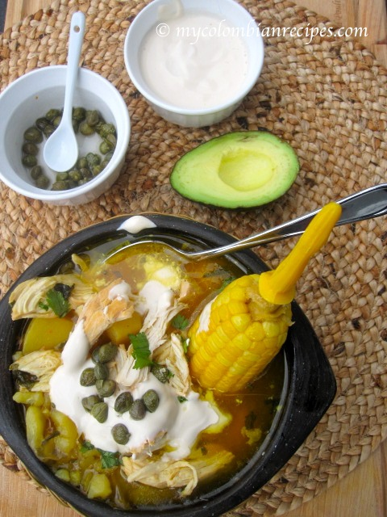

Colombian AJiaco

What is Ajiaco?
Ajiaco is one of the many regional Colombian dishes you can’t leave the country without trying. It’s a hearty soup made from three different kinds of potatoes (criolla, sabanera and pastusa), chicken, guasca leaves, with a half an ear of corn splashed in for good measure. Most times, Ajiaco is accompanied by a plate of rice and a slice of avocado. A helping of capers and something similar to sour cream is sometimes provided to mix with the soup if you choose.
Ingredients
- 3 chicken breast skin removed
- 12 cups water
- 3 ears fresh corn cut into 2 pieces
- Salt and pepper to taste
- 2 chicken bouillon cubes
- 3 scallions
- 2 garlic cloves minced
- 3 tablespoon chopped cilantro
- 2 cups papa criolla Andean Potato
- 3 medium white potatoes peeled and sliced
- 3 medium red potatoes peeled and sliced
- ⅓ cup guascas
- 1 cup heavy cream for serving
- 1 cup capers for serving
Instructions
-
In a large pot, place the chicken, corn, chicken bouillon, cilantro, scallions, garlic, salt and pepper. Add the water and bring to a boil, then reduce heat to medium and cook for about 30 to 35 minutes, until chicken is cooked and tender. Remove the chicken and set aside.
-
Continue cooking the corn for about 15 more minutes. Discard green onion and add red potatoes, white potatoes, and the guascas. Cook for 15 more minutes.
-
Uncover and add the frozen papa criolla and simmer for 15 minutes, season with salt and pepper.
-
Cut the chicken meat into small pieces and return to the pot. Serve the Ajiaco hot with capers and heavy cream on the side.